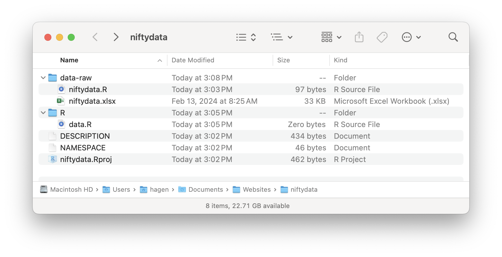

library(mydatapackage)Updated: Feb 26, 2025
I used to write long R scripts that imported data files, created new variables, reshaped the data, reshaped it again, and spit out results along the way, all in one file.
That worked so long as I never wanted to use that data again. But what if I did? Should I just tack on more code for the new analysis, and then even more code for yet more analyses? That approach will litter your environment with objects that are irrelevant for, and might even interfere with, a particular analysis. Should I copy all the files into a new directory and then hack away at the code? Now I have two copies of the data – which one is definitive? Should I just treat the original data files as the data? Now I have to repeat the same initial processing steps every time I want to reuse that data.
The solution
For each new data set I create a new R data package. This package lives in my library along with ggplot2, dplyr, lme4, and all my other packages, and is accessible in any project or analysis with a simple:
Creating a data package involves some small costs, but these are far outweighed by the benefits.
Pros
- Your data is cleanly separated from your analyses.
- Your data is easily accessible in any future project.
- Packages have a built-in documentation system so you can easily document all your variables. The documentation for each data frame (or other object) is accessible with
?my_df. - Packages have a versioning system so you can keep track of new versions of your data package.
- Share your data with students and colleagues simply by sharing the package.
- Archive your data in a public repository simply by uploading the package.
Cons
- Creating a package is a few extra steps.
- Every change to the data package requires a rebuild step before the changes are available in your analyses.
- If you forget to rebuild, your analyses will be using the outdated version of your data, something that can be hard to detect.
- In the early phases of an analysis, you will probably be moving code back and forth from your data package to your analysis until you find the sweet spot between processed data and analyzed data.
How to create a data package
I assume you are using RStudio. Although RStudio can create packages using the GUI, I have gotten obscure errors using that feature. Therefore, do not create a new RStudio project using the GUI. Instead, run this code from the console:
# Run these from the R console
# Check that the `usethis` package is installed. If not:
install.packages("usethis")
# Create new package. Directory must not exist.
# This also creates a new RStudio project.
usethis::create_package("path/to/my/nifty/data/package")Your new data package will open automatically in RStudio. If it doesn’t, open it using “Open project…” in RStudio. Then run this code from the console:
# Run this code after opening the new package in RStudio
# Set up the data-raw directory and data processing script
# You can use any name you want for your script
usethis::use_data_raw(name = 'niftydata')
# Create a script in the R directory that will contain the
# documentation, which I explain a bit later.
# You can use any name you want.
file.create("R/data.R")
# Initialize git repository (optional)
usethis::use_git()Put your data files into the data-raw folder. Your new package directory should look something like this:

Write your data processing code in a data-raw/niftydata.R script. It would look something like this:
# data-raw/niftydata.R
# Data import and processing pipeline
library(readr)
library(readxl)
niftydata <- read_excel("data-raw/niftydata.xlsx")
# Data cleaning code here...
# (Do NOT put data analysis code here!)
# This should be the last line.
# Note that names are unquoted.
# I like using overwrite = T so everytime I run the script the
# updated objects are saved, but the default is overwrite = F
usethis::use_data(niftydata, overwrite = T)That last line writes your R data frames and other data objects to files in the data directory (not the data-raw directory!). The data directory will be created if it does not exist.
Edit your DESCRIPTION file as specified in Hadley Wickham’s book on R packages:
https://r-pkgs.had.co.nz/description.html
You won’t need Imports or Suggests.
At this point you should confirm that you can build and install your package. You should see a Build tab in RStudio. Open it and click Build and Install (older RStudio versions) or Install (newer RStudio versions), which will build the package and install it in your package library. You should see your package in the Packages tab, and you should have access to the data frame objects in any script where you include: library(niftydata).
Document your data
One of the biggest advantages of creating a data package is that it provides a very convenient system for documenting your data, and for accessing that documentation. Although they are not required, I recommend first installing this utility package:
install.packages("sinew")Open your currently blank R/data.R file, which is where you will add the documentation using roxygen.
Then use the makeOxygen function from the sinew package to create skeleton documentation, e.g., for the mydataset data frame:
sinew::makeOxygen(niftydata, add_fields = "source")This will print out a skeleton that you copy and paste into your currently empty R/data.R file:
# This goes in R/data.R
#' @title DATASET_TITLE
#' @description DATASET_DESCRIPTION
#' @format A data frame with 1559 rows and 5 variables:
#' \describe{
#' \item{\code{Time (s)}}{double COLUMN_DESCRIPTION}
#' \item{\code{Acceleration - x (m/s²)}}{double COLUMN_DESCRIPTION}
#' \item{\code{Acceleration - y (m/s²)}}{double COLUMN_DESCRIPTION}
#' \item{\code{Acceleration - z (m/s²)}}{double COLUMN_DESCRIPTION}
#' \item{\code{Acceleration - resultant (m/s²)}}{double COLUMN_DESCRIPTION}
#'}
#' @source \url{http://somewhere.important.com/}
"niftydata"Do that for each data frame in your package, adding each skeleton to R/data.R. Edit the parts in ALL_CAPS. sinew also provides RStudio addins, available in the Addins menu. Read their documentation to learn how to use them.
For a bit more detail on documenting data packages, see:
Building your data package
The final step in creating a data package is to build the package along with the new documentation.
In the Build tab, first select Document from the More menu – this will generate the documentation from from the roxygen markup you created above. Then click Install and Restart (or Build and Reload). You should now be able to access the help page for each data frame in the standard way:
?niftydataYou’re done! Just remember, when you change something, update the version number in the DESCRIPTION file and rebuild your package.